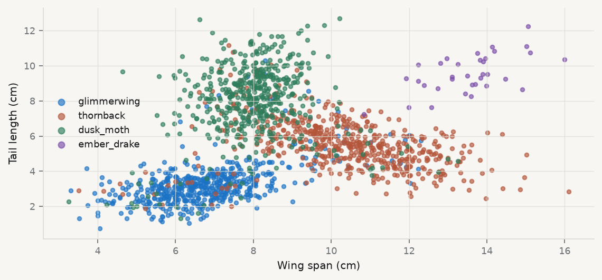
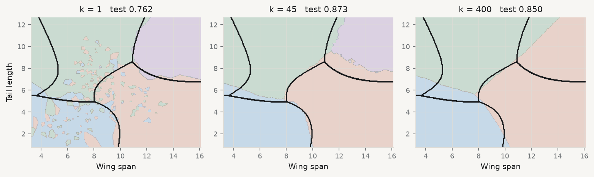

The Bayes classifier: \(\arg\max_j \Pr(Y=j \mid x)\), and its irreducible rate
\(k\)-NN estimates that posterior by local averaging
\(k\) controls the bias–variance trade directly
Distance in an irrelevant dimension is still distance
The Python
KNeighborsClassifier, and why StandardScaler is compulsory
GridSearchCV over \(k\), on training data only
confusion_matrix and classification_report
Drawing a decision boundary on a mesh
The judgement
Use a known ceiling to detect leakage rather than to celebrate
Refuse accuracy as a headline on imbalanced classes
Choose between precision and recall from the problem, not the metric
Say what a method cannot do, not just how it scored
The floor
Know the best possible score before you fit anything
The data
d = ess.load("bestiary")print(d.species.value_counts().to_string())print(f"\nrarest species: {(d.species =='ember_drake').mean():.2%} of records")
species
thornback 545
glimmerwing 527
dusk_moth 494
ember_drake 34
rarest species: 2.12% of records
Two measurements carry real information — wing span and tail length. mass_g, antenna_mm and scale_count are noise, and we come back to them at the end.
What the classes look like

The clouds overlap. That overlap is not a measurement problem — it is the reason perfect classification is impossible here, and it puts a hard ceiling on every method in this session.
The Bayes classifier
If you knew the true class probabilities at every point, the best rule would be to predict the most likely class:
0.8625 is the ceiling. No classifier — not a neural network, not a billion rows — can do better on this data, because the classes genuinely overlap and 7% of the field identifications are wrong.
So a test accuracy of 0.99 would not be an achievement. It would be a bug report: test rows leaking into training, or a feature that encodes the answer.
Most real problems do not hand you the floor. Estimating one anyway — from a simple baseline, from measurement reliability, from what a human expert achieves — turns an unanchored score into a number you can interpret.
\(k\)-nearest neighbours
The training data is the model
The whole algorithm
To classify a new point: find the \(k\) closest training points, take a vote.
raw scales:
wing_span_cm 2.20
tail_length_cm 2.53
mass_g 45.01
scale_count 64.13
mass_g has a standard deviation nearly forty times that of tail length. In Euclidean distance it would swamp everything else — and it is pure noise. A distance-based method with unstandardised features is measuring whatever happens to have the biggest numbers.
\(k = 1\) against \(k = 400\)
for k in (1, 5, 15, 45, 125, 400): m = KNeighborsClassifier(k).fit(A, ytr)print(f"k = {k:4d} train {m.score(A, ytr):.3f} test {m.score(B, yte):.3f}")print(f"\nBayes floor: {BAYES:.3f}")
k = 1 train 0.999 test 0.762
k = 5 train 0.866 test 0.850
k = 15 train 0.858 test 0.867
k = 45 train 0.855 test 0.873
k = 125 train 0.838 test 0.854
k = 400 train 0.829 test 0.850
Bayes floor: 0.863
Read the two columns as a pair. At \(k = 1\) the model knows the training data perfectly and generalises worst. At \(k = 400\) it has stopped distinguishing anything. The best test score sits in the middle, just about at the floor.
Made visible
Your boundary, drawn on top of the true one
Three boundaries, and the truth underneath

Colour is what the classifier learnt; the black lines are the true boundary.
Read those three panels
\(k = 1\) — the colour regions are shattered into islands, many of them a single mislabelled creature. The classifier has learnt the 7% label noise. Perfect on training data, worst on new data. Variance.
\(k = 45\) — the coloured regions follow the black lines closely. This is what “close to the truth” looks like.
\(k = 400\) — smooth, and in the wrong place. The rare species has vanished entirely from the map. Bias.
The bias–variance trade is not an abstraction here. It is three pictures, and you can see which one is right because the answer is drawn underneath.
Choosing \(k\) honestly
You cannot choose \(k\) on the test set — that would make the test score an estimate of nothing. Cross-validate within the training data:
best k by CV 21
CV accuracy 0.8580
test accuracy 0.8688
Bayes floor 0.8625
CV picked 21, not the 45 that happened to win on the test set. Both land within a percentage point of the floor, and the difference between them is noise. Picking the \(k\) that maximised the test score would have been cheating for nothing.
Other estimators, same data
for label, model in [ ("logistic regression (linear boundary)", LogisticRegression(max_iter=5000)), ("QDA (curved — the correct family)", QuadraticDiscriminantAnalysis()), ("decision tree, depth 3", DecisionTreeClassifier(max_depth=3, random_state=0)), ("decision tree, unlimited", DecisionTreeClassifier(random_state=0)), ("k-NN, k = 45", KNeighborsClassifier(45)),]: model.fit(A, ytr)print(f"{label:40s} train {model.score(A, ytr):.3f} test {model.score(B, yte):.3f}")
logistic regression (linear boundary) train 0.854 test 0.867
QDA (curved — the correct family) train 0.853 test 0.875
decision tree, depth 3 train 0.825 test 0.844
decision tree, unlimited train 0.999 test 0.765
k-NN, k = 45 train 0.855 test 0.873
What that table says
QDA is the right family — the data really is a mixture of Gaussians with unequal covariances — and it lands at 0.875, at the floor. It wins by knowing the answer’s shape.
\(k\)-NN gets there too, at 0.873, without knowing anything. That is the case for a non-parametric method.
The linear boundary loses almost nothing (0.867). Worth noticing: curvature only costs you where the data actually is, and here it barely is.
The unlimited tree is \(k=1\) again: train 0.999, test 0.765.
Two models can score identically for opposite reasons. Reporting only the score hides which.
The 2% species
What accuracy conceals
The confusion matrix
knn = KNeighborsClassifier(45).fit(A, ytr)pred = knn.predict(B)print(pd.DataFrame(confusion_matrix(yte, pred, labels=LABS), index=[f"true {l}"for l in LABS], columns=[f"-> {l}"for l in LABS]).to_string())print(f"\naccuracy {accuracy_score(yte, pred):.4f}")
blind = np.where(pred =="ember_drake", "thornback", pred)print(f"the model as fitted {accuracy_score(yte, pred):.4f}")print(f"the same model, ember drakes "f"{accuracy_score(yte, blind):.4f} <- never predicts the rare species")print(f"difference "f"{accuracy_score(yte, pred) - accuracy_score(yte, blind):.4f}")
the model as fitted 0.8729
the same model, ember drakes 0.8562 <- never predicts the rare species
difference 0.0167
Total blindness to the rare species costs 1.7 percentage points of accuracy. If accuracy is your objective, the optimiser has almost no reason to find it — and if the rare species is the one you built the classifier for, accuracy is measuring the wrong thing.
For ember_drake: precision 1.000, recall 0.800. Every drake it named was a drake; it found four in five. Whether that is a good classifier depends entirely on what happens next.
Cataloguing a rare species for conservation → recall. A missed drake is a drake that goes unprotected; a false alarm costs a field visit.
Triggering an expensive intervention → precision. A false alarm wastes the budget.
macro avg gives each class equal weight regardless of size; weighted avg reproduces accuracy. On imbalanced data the macro average — or balanced accuracy — is usually the honest headline.
Irrelevant features
Three columns of nothing, and what they cost
Adding noise, measured
Ntr, Nte, nytr, nyte = train_test_split(XN, y, test_size=0.3, random_state=1, stratify=y)nsc = StandardScaler().fit(Ntr)for k in (5, 15, 45, 125): two = KNeighborsClassifier(k).fit(A, ytr).score(B, yte) five = KNeighborsClassifier(k).fit(nsc.transform(Ntr), nytr ).score(nsc.transform(Nte), nyte)print(f"k = {k:4d} 2 real features {two:.3f} "f"+ 3 noise columns {five:.3f} ({five - two:+.3f})")
k = 5 2 real features 0.850 + 3 noise columns 0.838 (-0.012)
k = 15 2 real features 0.867 + 3 noise columns 0.867 (+0.000)
k = 45 2 real features 0.873 + 3 noise columns 0.846 (-0.027)
k = 125 2 real features 0.854 + 3 noise columns 0.846 (-0.008)
mass_g, antenna_mm and scale_count contain no information about species whatsoever, and adding them costs nearly three percentage points at the optimal \(k\).
Why noise hurts a distance method
\(k\)-NN asks “who is nearby?” In five dimensions, two creatures of the same species can be pushed apart by nothing more than a difference in mass — and distance in an irrelevant dimension is still distance. The neighbourhood fills up with the wrong neighbours.
This is the curse of dimensionality in miniature. As dimensions grow, all points become roughly equidistant and “nearby” stops meaning anything.
A regression would have shrunk those coefficients towards zero. \(k\)-NN has no coefficients, so it cannot ignore a feature you give it.
Which is why feature selection matters more for distance methods than for penalised linear ones.
Importance without coefficients
\(k\)-NN has nothing to report as an effect size. To find out what a feature is worth, scramble it and see what breaks:
The two real features carry all the importance; the three noise columns sit at roughly zero. Permutation importance is model-agnostic — it works for anything with a .predict, which is exactly what you need when there are no coefficients.
What to report
The confusion matrix, always. Accuracy alone is not a result.
Accuracy against a baseline — the majority class, and a floor if you can estimate one.
Per-class precision and recall, and which one your problem needs.
How the hyperparameter was chosen, and on which data.
What the model cannot do.
A single accuracy figure, with no baseline, no confusion matrix and no statement of how the hyperparameter was chosen, is not a finding. It is a number.
Key takeaways
Know the ceiling if you can compute one. It turns a high score from good news into a question.
\(k\)-NN has no fit, no form and no coefficients. The training data is the model.
\(k\) is the bias–variance dial: \(k=1\) is memorisation, \(k=n\) is the majority class.
Standardise. A distance method with mixed units is measuring the units.
Accuracy hides rare classes. Ignoring a 2% class costs 1.7 points; the confusion matrix shows it and accuracy does not.
Precision or recall — the problem decides, not the metric.
Irrelevant features hurt distance methods badly, and \(k\)-NN cannot ignore them.
References
James, Witten, Hastie & Tibshirani (2021). An Introduction to Statistical Learning, 2nd ed., ch. 2 and 4.
Hastie, Tibshirani & Friedman (2009). The Elements of Statistical Learning, 2nd ed., ch. 13.
Provost, F. & Fawcett, T. (2013). Data Science for Business. O’Reilly. Ch. 7–8.
Breiman, L. (2001). Statistical modeling: the two cultures. Statistical Science, 16(3), 199–231.